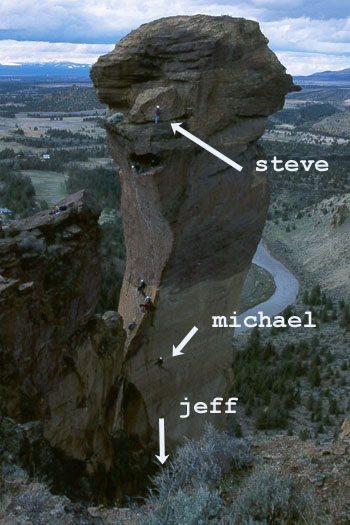
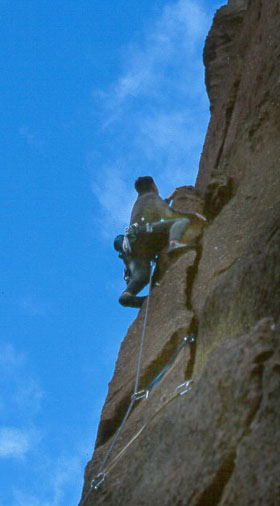
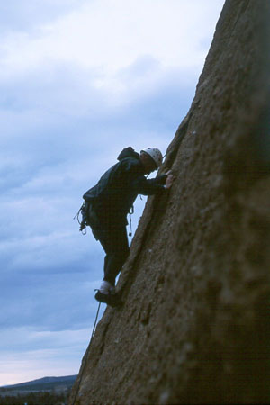
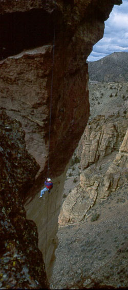
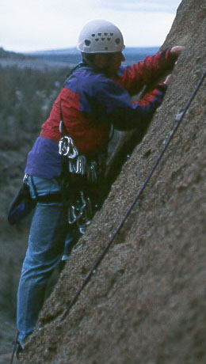

Smith Rocks
- March 20-21, 1999
- With special thanks to Kris for the pictures!

We awoke at dawn Saturday and Kris tried to get some good sunrise pictures. But low clouds prevented much from coming through. Jeff, Steve and I practically ran to the base of our first climb: Super Slab. Steve took the first lead, Jeff the traverse into a cavelet, and I got the “Super Slab” pitch. It was a great way to start the weekend, but soon we would be hating life!
Before the last pitch, voices shouted up to us from across the river, but we couldn’t make out what they said. When we finished the climb, a ranger appeared at the base and shouted up that we were climbing illegally due to nesting falcons. Oh lordy. Due to a missing bolt at the rappel station, we had to take the “walk-off” which involved some difficult scrambling, and a descent of the Misery Ridge trail. Jeff went ahead and talked to the ranger, who was very upset with us to say the least. We had missed the sign at the base of Super Slab because someone had pulled it down. We found out that we could be thrown in jail or made to pay a large fine. The ranger was understanding enough to let us stay in the park for the weekend, but we had to stay away from the main areas for the rest of the day. At this hour (10:30 am) that felt hard, but actually we were very, very lucky. As it turns out, this very popular route will be closed through August, indeed all of the Red Wall. Please stay away, as the residents across the river were up early like us, and are very vigilant about protected the nesting raptors and eagles. I for one, am very sorry to have given them something to be upset about.




Taking the ranger’s advice (orders?), we left for a while to get a long lunch, talking it over and figuring out what to do for the rest of the day. We settled on the Marsupial Crags, a long walk from the main walls, and a place unlikely to get us in trouble! We slunk back and walked out to Koala Rock where we intended to climb the moderate route Round River (5.4). But there was basically a line for it all day. Instead, Jeff led both pitches of Thin Air (5.9), a pretty challenging climb. We came down from that having seen climbers on the top of Brogan’s Spire, which looked really cool. Heading over, I led the poorly protected (rated X!) West Face (5.5). It was very fun climbing though, and very long. I ran the entire rope out, clipping one bolt and placing a cam. Steve and Jeff came up quickly to my good belay station. There wasn’t much more climbing, as a parking-lot sized ledge appeared 20 feet above. After that, a little roped climbing to the snugly-sized summit topped us out. We found a rappel station in a notch and took a steeper way down, making a single rope rappel, and a double rope rappel. After this, we called it a day.
After a good Mexican dinner in Bend, we headed back to camp, where Kris had already set up the tent. Lucky for us, because the crowd had arrived, and there wasn’t a free space to be seen. Unfortunately, it started to rain, pretty hard. It rained all night long, and Steve had to abandon his tarp and sleep in the car. Kris and I were very snug in the tent, and rather guiltily slept very well!
We were up a bit later due to the rain, but were still the first car in the parking lot. We hiked over Misery Ridge and down to the base of the Pioneer Route. Hoping for the West Face Variation (5.8), we decided against it because of the rain, although we could have done it once we saw that the rock wasn’t even wet. Oh well, next time!
Steve led up to Bonn Street, and I led the aid pitch. I was pretty eager to give this a try, and I wanted to belay Steve and Jeff up from the Mouth Cave where I could sit and enjoy the view. Due to just a little experience with Alex at Index, I actually moved pretty fast. Soon we were all in the cave, and Jeff led the last pitch from Panic Point. I followed, finding the exposure pretty difficult to take. The climbing felt much harder than 5.7, despite the profuse bolts to clip. It can be difficult to step out of the cave with nothing but air below! Certainly, my heart was pounding when I reached easier ground…I think I had forgotten to breath!
Steve came up and we enjoyed the summit for a while. The sun had come out and the Three Sisters were beautiful off to the west, snow intermingled with cloud. After a quick lunch of gorp, we prepared for the exciting descent. I had been scanning Misery Ridge for a sign of Kris, as she planned to show up around 11:00. We killed some time as Jeff showed us the “carabiner break” rappel system. He went down first, enjoying the smooth rappel thus provided. I was on my way down when Steve shouted to Kris across the gap. Yay! Now she could take some awesome pictures! So she did, and we met on the trail at the bottom. She was proud to have made the brutal hike over Misery Ridge, a worthy goal indeed.
For our next trick, we headed over to Spiderman Buttress. The route Spiderman (5.7) was full, so Jeff led a neat climb, either “Best Left to Obscurity 5.10a” or “Widow Maker 5.9,” it’s hard to tell from the book. I top-roped it, then then our chosen became open, and Steve took the first lead. A large party was rappelling from the 2nd pitch, and dropped a few too many rocks towards us. I belayed from a cavelet, glad to be out of the line of fire! I followed the climb, and was very impressed with Steve’s lead. The end of the first pitch involves getting over a chockstone in an insecure chimney, which left me wondering how I could commit to that on lead. Jeff came up to our hilariously cramped belay station, and we descended, since it was getting dark. I plan to lead the 2nd pitch next time.